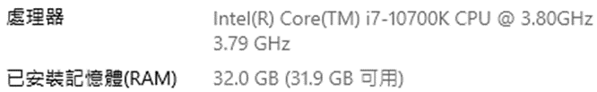
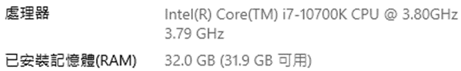

Voronoi Diagram
資工碩一 韓定紘 M103040011
軟體規格書
輸出與輸入（資料）規格
輸入
- 在畫布上用滑鼠任意點擊，畫布大小為630*630
- 按下「open」中的「input」，讀入「輸入文字檔」
- 按下「open」中的「output」，讀入「輸出文字檔」，直接顯示結果到畫布
輸出
- 按下「save」儲存執行結果(該按鍵只有在成功執行過「run」或「step」後才有效果)
輸入文字檔格式:
先有一列為輸入點數N，接下來N列為輸入點(x y)，即為一組輸入，若符合此格式，一個輸入檔可有多組輸入，以下為範例(N=3)
3
200 200
300 200
400 200
輸出文字檔格式:
以P x y表示圖中的點，E x1 y1 x2 y2表示圖中的邊，裡面的值皆以lexical order排序，以下為輸入範例的輸出
P 200 200
P 300 200
P 400 200
E 250 -62800 250 63200
E 350 -62800 350 63200
功能規格與介面規格
主介面
功能:
- open:
- input: 讀取輸入文字檔
- output: 讀取輸出文字檔
- save: 儲存執行結果
- next: 讀取下一筆資料(輸入文檔有多組輸入時)，或是清空畫布
- step: 針對畫布上的點逐步顯示繪製過程
- run: 針對畫布上的點顯示最終結果
軟體測試規劃書
主要是以網頁測資為測試依據，或是隨機在畫布上測試，在執行時用若為3點以下會直接解，4到6點會Divide和Merge一次，7點以上會Divide和Merge多次
軟體說明
安裝說明
下載主程式後執行「VoronoiDiagram.exe」即可
使用說明
繪製點
在畫布區繪製點可以直接在畫布上用滑鼠點擊，或是讀取「輸入文字檔」
繪製Voronoi Diagram
按下「run」顯示結果
按下「step」逐步顯示結果

輸出結果
按下「save」儲存結果為文字檔
程式設計
資料結構
在C#中有PointF可以用來儲存點座標，因此點的資料結構我就直接使用PointF，另外我又定義了以下兩個資料結構
Edge: 用來儲存線段的資料結構
PointF edgePA; //線段的A點
PointF edgePB; //線段的B點
PointF pointA; //製作此中垂線的A點
PointF pointB; //製作此中垂線的B點
PointEdgeRecoder: 用來儲存Voronoi Diagram的結構，也可以用於紀錄逐步執行
List<PointF> points_list; //紀錄Voronoi Diagram的點
List<Edge> edges_list; //紀錄Voronoi Diagram的線段
List<Edge> convex_list; //紀錄Convex Hull的線段
List<Edge> hyper_list; //紀錄Hyper Plane的線段
Color point_color; //紀錄Voronoi Diagram點顯示的顏色
Color edge_color; //紀錄Voronoi Diagram線段的顏色
Color convex_color; //紀錄Convex Hull的顏色
Color hyper_color; //紀錄Hyper Plane的顏色
三點以下
線段
Voronoi Diagram的線段是由兩點的中垂線所組成，中垂線的求法很直覺的會用斜率來算，我一開始也是使用斜率，但是後來發現斜率的方法可能會出現分母為零的情況，想不到怎麼處理。因此我後來採用向量的方法，方法是先算出兩點的向量，接著求垂直該向量的垂直向量，然後將兩點的中點加上足夠倍率的正負垂直向量就可以取得中垂線的兩個端點，即為所求線段
一點
不用做任何處理
兩點
找出兩點的中垂線線段即可
三點
三個點的情況除了基本的中垂線要找外，還要找三點的外心，因為三個中垂線會交於同一點，所以找到其中兩個中垂線的交點即為外心。在這裡線段一端是外心，至於另一端是原本中垂線的其中一端，要決定保留哪一端就成了一個問題。在決定要保留哪一端的方法上，我會先把三個點以逆時鐘排序(可利用差積判斷)，再利用前述的向量法求得中垂線向量，由於三點為逆時鐘排序，此時求得的向量方向會全部都為要去除或是要保留的方向，我把程式調整成方向為要保留的方向(改中垂線向量方向即可)，最後再把外心加上足夠倍率的中垂線向量即為另一端點
三點共線
我程式會去判斷是否三點共線，若為三點共線，直接求得兩中垂線即可
多點
演算法
- 分割: 將座標排序後，平分點到左右半邊
- 求Voronoi Diagram: 分別求得左右半邊的Voronoi Diagram
- 求上下切線: 找到全部點的Convex Hull，橫跨左右兩邊的線段即為上下切線
- 求Hyper Plane: 從上或下切線進入，碰到Voronoi Diagram轉彎，若沒有再碰到Voronoi Diagram結束
- 消線: 看Hyper Plane往哪裡轉彎就消除哪邊的線，並把一些完全沒有交線的線段去除
虛擬碼
PointEdgeRecoder runVoronoiDiagram(List<PointF> point_list)
{
result = new PointEdgeRecoder();
if(point_list.Count==1)
return PointEdgeRecoder(point_list);
else if(point_list.Count==2)
result = runVoronoiDiagram_2(point_list);
else if(point_list.Count==3)
result = runVoronoiDiagram_3(point_list);
else
{
Divide(point_list, left_points, right_points);
Voronoi_left = runVoronoiDiagram(left_points);
Voronoi_right = runVoronoiDiagram(right_points);
result = Merge(Voronoi_left, Voronoi_right);
}
return result;
}
Divide
先將點以lexical order排序，接下來就非常直覺的把點分成兩等分，在這裡比較特別的是我在分到點數量為5的時候會看中間的點比較接近左邊還是右邊，我會將中間的點分到它較為靠近的那邊，因為我覺得這樣分比較合理
Merge
合併的第一件事情就是要找上下切線，要找上下切線的話就要先找到要合併點的Convex Hull，這裡我參考了演算法筆記的Andrew’s Monotone Chain的方法，這個方法可以分別求得Convex Hull的上凸包以及下凸包，上凸包橫跨左右兩側的線段為上切線，下凸包橫跨左右兩側的線段為下切線，雖然直接用這個方法很方便，但是在橫跨線段上有共線點的時候找到的端點不會是我們要的點，因此我對它有稍作修改以達到我到的點
Hyper Plane
Hyper Plane是由多個中垂線所組成，在有了上下切線後，第一條Hyper Plane就是上切線(假設為P1-P2)的中垂線，在它碰到(表示有交點)下一個既有的Voronoi Diagram的邊時，它要進行轉彎的動作，此碰到的邊有一個特性，它是由製作上一條Hyper Plane的其中一個端點(假設為P1)和另一個點所製作(假設為P3)的中垂線，下一個Hyper Plane就是由另一個點(P3)和上一條Hyper Plane的另一個端點(P2)所製作的中垂線，之後的Hyper Plane就使用相同的方法進行，一直到沒再碰到既有Voronoi Diagram的邊為止，要注意的是Hyper Plane的交點不能回頭

消線
碰到的線段會需要把原本其中一個端點改成交點，要決定改哪一個端點的話就是由前面所述，要看下一條Hyper Plane往哪個方向轉，要把同方向的那個端點改掉，判斷方向可以利用差積來判斷。在改完線段之後，要消除一些完全沒有和Voronoi Diagram有交點的線段，在這邊我就是去找哪些線段是需要刪除的，我就去刪除
特殊情況
因為在計算上會有浮點數所造成的誤差，導致左右兩側在合併時，若左右有各別有一點的x或y值太靠近會造成運算上的錯誤，造成程式會判斷成回頭點，也就是認定為沒有交點，這裡我沒有處理到，可能可以考慮設置一個容忍值去接受那個誤差。在消線上我會去掉完全沒有和Voronoi Diagram有交點的線段，但我忘記考慮到線段和Hyper Plane平行的狀況，造成平行線被消掉，在這裡應該要在去判斷是否有線段和Hyper Plane平行
逐步執行
我在顯示畫面的時候都是依照PointEdgeRecoder此資料結構顯示，可以看到該資料結構會記錄點、線段、Convex Hull線段以及Hyper Plane線段，以及他們對應的顏色，因此我把要顯示的步驟都用PointEdgeRecoder的結構儲存並存入一個佇列中，當使用者按下「step」時，就從佇列取出一個PointEdgeRecoder顯示，只是要注意的是C#是使用物件導向，存入佇列的內容若直接使用變數的話，它只會紀錄該物件的記憶體位置，後面步驟若改到該物件會把佇列內的值也改掉，這樣就不對了，所以要將物件利用Clone的方法儲存
軟體測試與實驗結果
執行環境
程式語言: C#
作業系統: Windows 10
編譯器: Visual Studio 2019
Windows 版本
系統

實驗結果
本實驗在三點以下不會有錯，但是左右側在Merge時若有點的x或y值太過於接近可能會因為浮點數的誤差導致沒找到交點的情況，以及在Merge時若有與Hyper Plane有平行的線且沒有與任何Voronoi Diagram有交點的情況會有被錯刪的狀況，由於上述的可能性，或是一些還未發現的問題，導致在進行第二次Merge的時候很多情況都會失敗
3點以下

4-6點
7-12點

超過13點
結論與心得
在語言的選擇上，因為本堂課程有說要使用GUI，而且還要使用到畫布、讀寫檔，我很直覺的就想到大學時修的視窗程式設計課程使用C#建立視窗程式，在建立GUI的過程中我非常順利的就完成了，但是在實作演算法的過程中，已經寫習慣Python的我覺得C#的語法過於冗長，而我又對於這個演算法的撰寫不熟悉，讓我感覺使用C#不是那麼明智的選擇。在演算法的實作上面，從前文的實驗結果可以知道，我的方法不是完全正確的，甚至在很多案例上都會失敗，讓我覺得Voronoi Diagram雖然說理論看似很簡單，但是如果要實作會遇到許多困難，而且也有理論外的特例要加以考慮，在實作上並不是那麼簡單的演算法
附錄
相關檔案
執行檔
程式原始碼合併檔
測試輸入、輸出檔
相關連結
Point-演算法筆記: http://web.ntnu.edu.tw/~algo/Point.html
Convex Hull-演算法筆記: http://web.ntnu.edu.tw/~algo/ConvexHull.html
Voronoi Diagram
資工碩一 韓定紘 M103040011
軟體規格書
輸出與輸入（資料）規格
輸入
輸出
輸入文字檔格式:
先有一列為輸入點數N，接下來N列為輸入點(x y)，即為一組輸入，若符合此格式，一個輸入檔可有多組輸入，以下為範例(N=3)
輸出文字檔格式:
以P x y表示圖中的點，E x1 y1 x2 y2表示圖中的邊，裡面的值皆以lexical order排序，以下為輸入範例的輸出
功能規格與介面規格
主介面
功能:
軟體測試規劃書
主要是以網頁測資為測試依據，或是隨機在畫布上測試，在執行時用若為3點以下會直接解，4到6點會Divide和Merge一次，7點以上會Divide和Merge多次
軟體說明
安裝說明
下載主程式後執行「VoronoiDiagram.exe」即可
使用說明
繪製點
在畫布區繪製點可以直接在畫布上用滑鼠點擊，或是讀取「輸入文字檔」
繪製Voronoi Diagram
按下「run」顯示結果

按下「step」逐步顯示結果
輸出結果
按下「save」儲存結果為文字檔
程式設計
資料結構
在C#中有PointF可以用來儲存點座標，因此點的資料結構我就直接使用PointF，另外我又定義了以下兩個資料結構
三點以下
線段
Voronoi Diagram的線段是由兩點的中垂線所組成，中垂線的求法很直覺的會用斜率來算，我一開始也是使用斜率，但是後來發現斜率的方法可能會出現分母為零的情況，想不到怎麼處理。因此我後來採用向量的方法，方法是先算出兩點的向量，接著求垂直該向量的垂直向量，然後將兩點的中點加上足夠倍率的正負垂直向量就可以取得中垂線的兩個端點，即為所求線段
一點
不用做任何處理
兩點
找出兩點的中垂線線段即可
三點
三個點的情況除了基本的中垂線要找外，還要找三點的外心，因為三個中垂線會交於同一點，所以找到其中兩個中垂線的交點即為外心。在這裡線段一端是外心，至於另一端是原本中垂線的其中一端，要決定保留哪一端就成了一個問題。在決定要保留哪一端的方法上，我會先把三個點以逆時鐘排序(可利用差積判斷)，再利用前述的向量法求得中垂線向量，由於三點為逆時鐘排序，此時求得的向量方向會全部都為要去除或是要保留的方向，我把程式調整成方向為要保留的方向(改中垂線向量方向即可)，最後再把外心加上足夠倍率的中垂線向量即為另一端點
三點共線
我程式會去判斷是否三點共線，若為三點共線，直接求得兩中垂線即可
多點
演算法
虛擬碼
Divide
先將點以lexical order排序，接下來就非常直覺的把點分成兩等分，在這裡比較特別的是我在分到點數量為5的時候會看中間的點比較接近左邊還是右邊，我會將中間的點分到它較為靠近的那邊，因為我覺得這樣分比較合理
Merge
合併的第一件事情就是要找上下切線，要找上下切線的話就要先找到要合併點的Convex Hull，這裡我參考了演算法筆記的Andrew’s Monotone Chain的方法，這個方法可以分別求得Convex Hull的上凸包以及下凸包，上凸包橫跨左右兩側的線段為上切線，下凸包橫跨左右兩側的線段為下切線，雖然直接用這個方法很方便，但是在橫跨線段上有共線點的時候找到的端點不會是我們要的點，因此我對它有稍作修改以達到我到的點
Hyper Plane
Hyper Plane是由多個中垂線所組成，在有了上下切線後，第一條Hyper Plane就是上切線(假設為P1-P2)的中垂線，在它碰到(表示有交點)下一個既有的Voronoi Diagram的邊時，它要進行轉彎的動作，此碰到的邊有一個特性，它是由製作上一條Hyper Plane的其中一個端點(假設為P1)和另一個點所製作(假設為P3)的中垂線，下一個Hyper Plane就是由另一個點(P3)和上一條Hyper Plane的另一個端點(P2)所製作的中垂線，之後的Hyper Plane就使用相同的方法進行，一直到沒再碰到既有Voronoi Diagram的邊為止，要注意的是Hyper Plane的交點不能回頭

消線
碰到的線段會需要把原本其中一個端點改成交點，要決定改哪一個端點的話就是由前面所述，要看下一條Hyper Plane往哪個方向轉，要把同方向的那個端點改掉，判斷方向可以利用差積來判斷。在改完線段之後，要消除一些完全沒有和Voronoi Diagram有交點的線段，在這邊我就是去找哪些線段是需要刪除的，我就去刪除
特殊情況
因為在計算上會有浮點數所造成的誤差，導致左右兩側在合併時，若左右有各別有一點的x或y值太靠近會造成運算上的錯誤，造成程式會判斷成回頭點，也就是認定為沒有交點，這裡我沒有處理到，可能可以考慮設置一個容忍值去接受那個誤差。在消線上我會去掉完全沒有和Voronoi Diagram有交點的線段，但我忘記考慮到線段和Hyper Plane平行的狀況，造成平行線被消掉，在這裡應該要在去判斷是否有線段和Hyper Plane平行
逐步執行
我在顯示畫面的時候都是依照PointEdgeRecoder此資料結構顯示，可以看到該資料結構會記錄點、線段、Convex Hull線段以及Hyper Plane線段，以及他們對應的顏色，因此我把要顯示的步驟都用PointEdgeRecoder的結構儲存並存入一個佇列中，當使用者按下「step」時，就從佇列取出一個PointEdgeRecoder顯示，只是要注意的是C#是使用物件導向，存入佇列的內容若直接使用變數的話，它只會紀錄該物件的記憶體位置，後面步驟若改到該物件會把佇列內的值也改掉，這樣就不對了，所以要將物件利用Clone的方法儲存
軟體測試與實驗結果
執行環境
程式語言: C#
作業系統: Windows 10
編譯器: Visual Studio 2019
Windows 版本
系統

實驗結果
本實驗在三點以下不會有錯，但是左右側在Merge時若有點的x或y值太過於接近可能會因為浮點數的誤差導致沒找到交點的情況，以及在Merge時若有與Hyper Plane有平行的線且沒有與任何Voronoi Diagram有交點的情況會有被錯刪的狀況，由於上述的可能性，或是一些還未發現的問題，導致在進行第二次Merge的時候很多情況都會失敗
3點以下
4-6點
7-12點
超過13點
結論與心得
在語言的選擇上，因為本堂課程有說要使用GUI，而且還要使用到畫布、讀寫檔，我很直覺的就想到大學時修的視窗程式設計課程使用C#建立視窗程式，在建立GUI的過程中我非常順利的就完成了，但是在實作演算法的過程中，已經寫習慣Python的我覺得C#的語法過於冗長，而我又對於這個演算法的撰寫不熟悉，讓我感覺使用C#不是那麼明智的選擇。在演算法的實作上面，從前文的實驗結果可以知道，我的方法不是完全正確的，甚至在很多案例上都會失敗，讓我覺得Voronoi Diagram雖然說理論看似很簡單，但是如果要實作會遇到許多困難，而且也有理論外的特例要加以考慮，在實作上並不是那麼簡單的演算法
附錄
相關檔案
執行檔
程式原始碼合併檔
測試輸入、輸出檔
相關連結
Point-演算法筆記: http://web.ntnu.edu.tw/~algo/Point.html
Convex Hull-演算法筆記: http://web.ntnu.edu.tw/~algo/ConvexHull.html